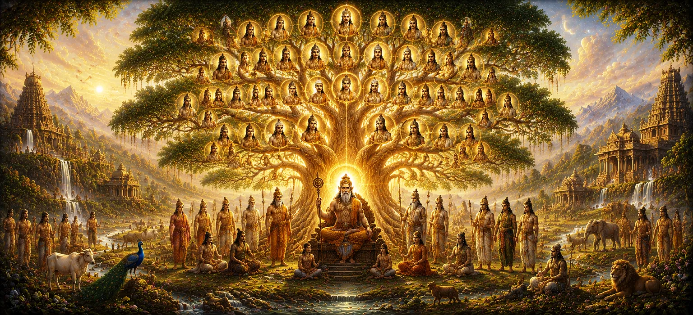

The Lineage of Manu
Following the introduction of Vaivasvata Manu's nine sons and their primary domains in Chapter 36, the thirty-seventh chapter of Uma Samhita expands deeply into the subsequent branches, offshoots, and generational continuation of the Manu lineage.
This chapter traces how individual royal houses multiplied across generations, giving rise to famous kings, sages, and heroes who maintained the fabric of civilization and upheld the principles of righteousness.
Through this detailed genealogical record, the scripture demonstrates the meticulous preservation of historical and spiritual heritage under divine governance.
Chapter 37 Highlights
Dynastic Expansion
Traces the branching of generations stemming from Manu's sons.
Famous Descendants
Highlights prominent monarchs and figures who shaped early history.
Genealogical Records
Maintains the chronological flow of the solar and allied dynasties.
Duty and Honor
Emphasizes how successive rulers preserved truth and justice.
Spiritual Harmony
Illustrates the continuing alliance between kings and divine sages.
Divine Legacy
Connects human lineage with the overarching cosmic will of Lord Shiva.
Core Topics in This Chapter
- 01 Prologue to the Expanding Lineage of Manu →
- 02 Successors and Offshoots of the Ikshvaku House →
- 03 Descendants of Manu's Other Illustrious Sons →
- 04 Eminent Kings and Their Alignment with Sages →
- 05 The Preservation of Dharma Across Generations →
- 06 Territorial Growth and Administration →
- 07 Moral and Ethical Foundations of the Successors →
- 08 Interwoven Dynastic Relationships and Alliances →
- 09 Reflections on Ancestral Duty and Eternal Legacy →
- 10 Setting the Stage for the Lineage Leading to Sagara →
Prologue to the Expanding Lineage of Manu
Chapter 37 opens by emphasizing that a single righteous patriarch can become the seed for countless flourishing generations. The text reflects on how Vaivasvata Manu’s progeny multiplied to populate the world with capable leaders.
This continuous branching ensured that human civilization retained structural integrity, moral governance, and spiritual depth as it spread across the globe.
The scripture treats each ancestral link with reverence, noting that memory of one's noble heritage inspires future generations to uphold virtue.
Successors and Offshoots of the Ikshvaku House
The narrative details the descendants stemming from Prince Ikshvaku in the Solar Dynasty. It lists the valiant kings and righteous rulers who expanded the capital of Ayodhya and secured neighboring territories.
These monarchs were celebrated for their adherence to truth, keeping their royal word, and maintaining the highest standards of chivalry and duty.
Through their reigns, the Ikshvaku house became synonymous with unwavering justice and devotion to higher spiritual laws.
Descendants of Manu's Other Illustrious Sons
Beyond the Solar line, Chapter 37 tracks the extensive offshoots originating from Manu’s other sons, such as Nabhaga, Saryati, and Dhrishta. Each branch developed its own distinct culture and regional power.
These subsidiary lines contributed significantly to the tapestry of ancient Indian polity, producing sages, warriors, and administrators of high renown.
The text maps their migrations and settlements, showing how disparate regions were unified under a common spiritual and moral umbrella.
Eminent Kings and Their Alignment with Sages
A central motif in this chapter is the deep collaboration between successive kings and enlightened rishis. Whenever a monarch sought guidance, wise sages provided counsel rooted in scriptural truth.
This partnership prevented tyranny and ensured that state power remained humble, benevolent, and dedicated to the welfare of all living beings.
Kings performed grand sacrifices under the direction of these preceptors, purifying the atmosphere and invoking divine blessings for their realms.
The Preservation of Dharma Across Generations
The scripture highlights that maintaining dharma is not a passive inheritance but an active responsibility. Each generation of the Manu lineage had to recommit to truth, self-control, and protection of the weak.
When rulers strayed from this path, suffering ensued; when they adhered to it, peace and abundance flourished throughout the realm.
Thus, the genealogical records serve as moral case studies for how righteous choices sustain civilization across epochs.
Territorial Growth and Administration
As populations grew, princes established new administrative centers, cleared forests for agriculture, and built secure towns that fostered trade and commerce.
The text explains that effective governance required balancing military preparedness with compassionate welfare policies for farmers, artisans, and scholars.
This comprehensive approach turned wild frontiers into vibrant hubs of cultural and spiritual expression.
Moral and Ethical Foundations of the Successors
Chapter 37 underscores the internal discipline expected of royal scions. Education in martial arts was always paired with rigorous training in ethics, humility, and philosophical inquiry.
Princes learned to master their senses before attempting to govern others, ensuring that personal ego did not cloud public judgment.
This high ethical standard earned these dynasties the deep respect and loyalty of their populace.
Interwoven Dynastic Relationships and Alliances
The text details how intermarriages and diplomatic alliances among the different branches of Manu’s descendants created a cohesive network of related kingdoms.
These alliances prevented destructive internal wars and promoted peaceful cultural exchanges, shared festivals, and unified defense against external threats.
Through cooperation, the various houses reinforced each other’s stability and prosperity.
Reflections on Ancestral Duty and Eternal Legacy
The narrative pauses to reflect on the deeper meaning of lineage. It teaches that a person’s true worth is measured not by wealth or territory, but by the purity of their character and dedication to truth.
By studying the noble lives of past emperors and sages, seekers are inspired to cultivate similar virtues within their own spheres of influence.
Every righteous act becomes a brick in building a lasting spiritual legacy that pleases Lord Shiva.
Setting the Stage for the Lineage Leading to Sagara
As Chapter 37 concludes its comprehensive survey of the expanding branches of the Manu lineage, it prepares the reader for the remarkable historical narrative that follows.
The broad genealogical framework established here flows directly into the specific chronicle of emperors from Satyavrata to the legendary King Sagara in Chapter 38.
Readers are left with a clear panoramic view of how ancient dynasties evolved to set the stage for legendary divine interventions and heroic trials.
Key Teachings of Chapter 37
Expanding Roots
A single righteous patriarch multiplies into countless civilizations of light.
Ikshvaku House
The Solar Dynasty continued to produce exemplary rulers dedicated to truth.
Sage Counsel
Collaboration between kings and rishis ensures benevolent and just administration.
Active Dharma
Righteousness must be actively preserved and practiced by each successive generation.
Unified Polity
Intermarriages and alliances formed a cooperative network of peaceful kingdoms.
Spiritual Legacy
Virtuous character and devotion to Lord Shiva create an eternal legacy.
Spiritual Reflection
Chapter 37 provides a profound look at the branching tree of human history, viewing dynasties not merely as political entities, but as channels for the expression of cosmic order. The successors of Vaivasvata Manu understood that holding power was secondary to upholding truth, ethics, and devotion to the divine. Their collaboration with spiritual preceptors demonstrates that material progress without spiritual wisdom leads to chaos. As we review these expansive lineages, we are invited to examine our own lives: are we adding strength and virtue to our ancestral heritage? By living with integrity, compassion, and unwavering devotion to Lord Shiva, we honor our past and pave a luminous path for the future.
Living the Message of Chapter 37
Apply the wisdom of Chapter 37 by recognizing that your personal actions ripple through your family and community. Strive to uphold honesty, kindness, and moral courage in all your daily endeavors.
Value the guidance of experienced, wise mentors, and ensure that your decisions benefit those around you rather than serving selfish interests.
In doing so, you become a worthy carrier of a noble human heritage, echoing the righteousness of Manu’s ancient descendants.
Key Spiritual Concepts
The expansive branching and generational growth of noble royal families.
The primary branch of the Solar Dynasty originating from Prince Ikshvaku.
The harmonious dialogue and cooperation between temporal kings and spiritual sages.
The continuous active preservation of moral and cosmic laws across epochs.
Diplomatic alliances and intermarriages uniting related kingdoms in peace.
The unbroken chain of virtuous heritage passed down through noble ancestry.
Chapter Summary
Uma Samhita Chapter 37 provides a thorough account of the expanding lineage and generational offshoots stemming from Vaivasvata Manu. It details the successors of the Ikshvaku house and the various branches originating from Manu’s other sons, mapping how these royal houses established secure administrations, practiced moral discipline, and formed cooperative diplomatic alliances. Emphasizing the close partnership between kings and spiritual sages, the chapter illustrates how dharma was actively preserved across epochs. By reviewing this broad dynastic framework, the text sets a comprehensive historical stage for the specific chronicle leading from Satyavrata to King Sagara in Chapter 38.
Frequently Asked Questions
① What is the primary topic of Uma Samhita Chapter 37?
The primary topic covers the continuation, expansion, and detailed branching of the Manu dynasty following the introduction of his primary sons.
② How does Chapter 37 expand upon Chapter 36?
While Chapter 36 lists the nine sons and their initial domains, Chapter 37 extends this narrative into the subsequent generations and sub-branches of the lineage.
③ Why is the study of dynastic lineages important in the Shiva Purana?
It demonstrates how moral integrity, righteous governance, and spiritual duty were preserved across generations under the ultimate protection of Lord Shiva.
④ What themes of governance are emphasized in the Manu lineage?
The themes include truthfulness, protection of subjects, adherence to dharma, and cooperation with spiritual sages.
⑤ How does Chapter 37 bridge into Chapter 38?
Chapter 37 sets up the broad ancestral framework that leads directly into specific historical narratives, such as the account from Satyavrata to Sagara in Chapter 38.
⑥ What spiritual takeaway is offered through these genealogical chapters?
They remind seekers of the interconnected nature of human history and the enduring legacy of virtuous deeds over fleeting temporal power.
“Through generational adherence to truth and sage counsel, noble dynasties keep the flame of cosmic order alive.”
Continue Through Uma Samhita
Chapter 37 details the expansive lineage and generational branches of Manu. With this broad ancestral foundation established, continue into Chapter 38 to explore the historical narrative from Satyavrata to Sagara.